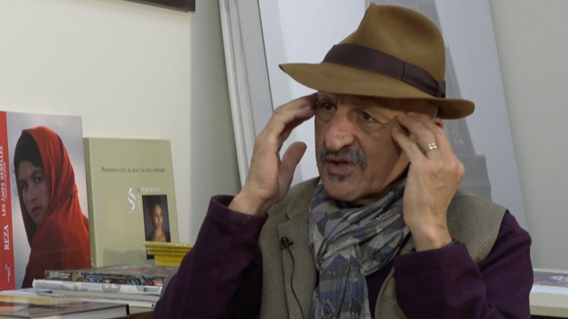
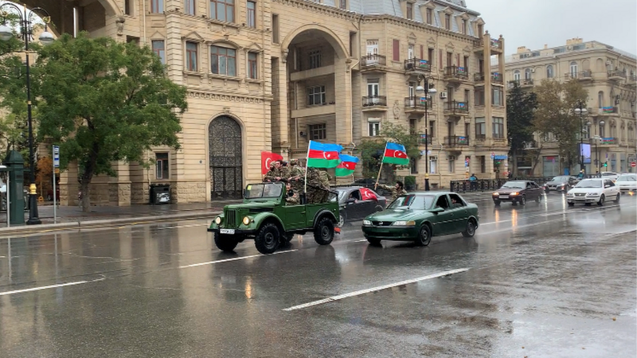
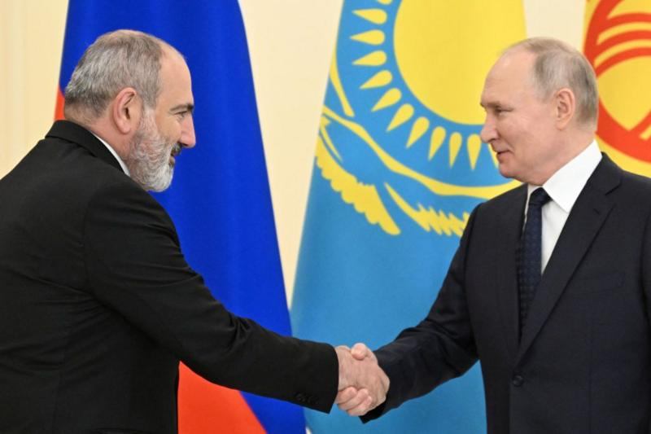
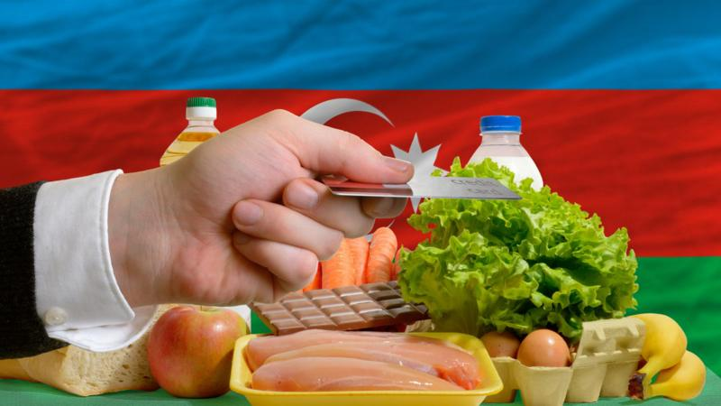

News
Home
Israel-Gaza war
War in Ukraine
Climate
Video
World
UK
Business
Tech
Science
Xocalıdan olan "qadının qışqırtısı hələ də qulağımdadır", Xocalı qırğınını dünyaya göstərmiş Reza
Fransadan olan fotoqraf Reza Deghati-nin Xocalı və 20 yanvar faciəsi ilə bağlı çəkdiyi şəkillər müxtəlif sərgilərdə nümayiş olunub. O, öz gözləri ilə gördüklərini Səadət Akifqızına danışıb.
Azərbaycan İkinci Qarabağ müharibəsində qalib gəlməsinin ikinci ilini bayram edir
İkinci Qarabağ müharibəsi[46][47][48][49][50], Vətən müharibəsi[51][52], 44 günlük müharibə[53][54] və ya "Dəmir Yumruq" əməliyyatı[55][56] — Azərbaycan Silahlı Qüvvələri və Ermənistan Silahlı Qüvvələri arasında Dağlıq Qarabağda davam edən silahlı qarşıdurma. Atəşkəsdən sonra müşahidə olunan ən gərgin və uzunmüddətli döyüşdür. Beynəlxalq səviyyədə Azərbaycanın bir hissəsi kimi tanınan, lakin Ermənistan hökumətinin idarəetməsi altında yaradılan Qondarma Dağlıq Qarabağ Respublikası ilə bağlı həll olunmamış münaqişənin son gərginləşməsidir. Qarşıdurmalar 27 sentyabr 2020-ci il səhər saat 06:00-da Qarabağ müharibəsindən sonra yaradılmış təmas xətti boyunca başladı. Bunun ardınca Ermənistanda hərbi vəziyyət və ümumi səfərbərlik,[57][58] Azərbaycan isə hərbi vəziyyət, komendant saatı və qismən səfərbərlik elan etdi.[59][60] Türkiyə, bu dəstəyin dərəcəsi mübahisəli olsa da, Azərbaycana hərbi dəstək verdi.[61][62] Türkiyənin iştirakının, münaqişədə Azərbaycanın mövqeyini artırmaqla və Rusiyanın bölgədəki təsirini kənarlaşdırmaqla təsir dairəsini genişləndirmək cəhdi olduğu düşünülür.[63][64]
Ermənistan Rusiyadan nə qədər asılıdır?
Ermənistan “Rusiyanın onu silahla təmin etməməsi” və bura “sərmayə qoymaması”na görə yeni təhlükəsizlik tərəfdaşları və iqtisadiyyatın diversifikasiyası axtarışındadır, ölkənin Təhlükəsizlik Şurasının katibi Armen Qriqoryan deyib. "Ermənistan 2021-ci ilin mayında (Azərbaycanla sərhəddə toqquşma nəzərdə tutulur-red.) hücuma məruz qalıb və Rusiya Ermənistanın ödədiyi 250 milyon dollarlıq silahı çatdırmayıb. Bu, [Ermənistanın] təhlükəsizlik strategiyasına yenidən baxılmasına səbəb olan əsas məqam idi", - o, ölkənin İctimai TV-nə müsahibəsində deyib. “Ehtiyac duyduğu müdafiə vasitələrsiz qalan Ermənistan yeni strateji tərəfdaşlar, o cümlədən Hindistan, Fransa və bir sıra Aİ ölkələri üzrə fəal axtarışa başlayıb”, - o əlavə edib. Ria Novosti xəbər agentliyinin məlumatına görə, Rusiyanın xarici işlər naziri Sergey Lavrov martın 2-də Yerevanın Moskva ilə əlaqələrini pisləşdirmək üçün “şüurlu qərar” qəbul etdiyini deyib və bildirib ki, Moskva Yerevanla münasibətlərə yenidən baxa bilər.
BBC araşdırması: Azərbaycanda real gəlirlər nə qədərdir?
Bakıda dövlət təhsil müəssisələrində çalışan müəllimlərin orta aylıq əmək haqqı 2022-2023-cü tədris ilində 909 manat olub, şəhər təhsil idarəsi açıqlayıb. Son 4 ayda isə rəsmi statistikaya görə, Azərbaycanda orta aylıq əmək haqqı 900 manat olub. Dövlət Statistika Komitəsinin məlumatına görə, bu ilin ilk üç ayı ərzində ölkə iqtisadiyyatında muzdla işləyənlərin orta aylıq əmək haqqı əvvəlki ilin müvafiq dövrünə nisbətən 11,4 faiz artıb. Orta aylıq əmək haqqı 900 manat olsa da, adekvat olaraq, inflyasiya da artıb. Mərkəzi Bankın məlumatına görə, ilk 3 ayda inflasiya 13,8 faiz olub.Bəs, ümumiyyətlə, 900 manatlıq orta aylıq əmək haqqı real gəlirləri əks etdirirmi? Bəzi müstəqil iqtisadçılara görə, ölkədə biznesin təklif etdiyi qiymətləri və xərcləmələri təhlil edəndə o qənaətə gəlmək olur ki, bəzi gəlirlər rəsmiləşdirilmir və bu da özünü əmək haqqı fondunda göstərmir, əks halda orta aylıq əmək haqqı daha çox olmalıydı. “Məsələn, Bakıda orta aylıq əmək haqqı 1000 manata yaxındır, ödənilən kommersiya ipotekası da azı 800-1000 manatdır. Burda da sual yaranır ki, o zaman bu şəxs ərzağa, kommunala xərci hardan alır?” - iqtisadçı Natiq Cəfərli BBC Azərbaycancaya deyib. Dövlət Statistika Komitəsindən BBC-yə bildiriblər ki, dövlət və özəl sektorda vəzifə maaşları ilə yanaşı bütün əlavə, bonus və mükafatlar əmək haqqı fonduna daxil edilir və bu da ümumi orta aylıq əmək haqqında özünü göstərir. Bu yaxınlarda Mehman Hüseynova müsahibə verdiyi üçün töhmət almış millət vəkili Vahid Əhmədov istisna etmir ki, rəsmiləşməyən gəlirlər var, amma onun sözlərinə görə, aparılan islahatlar nəticəsində “qara mühasibatlıq ağarır” və korrupsiyanın qarşısını almaq üçün, xüsusilə dövlət müəssisələrində maaşlar artırılır.